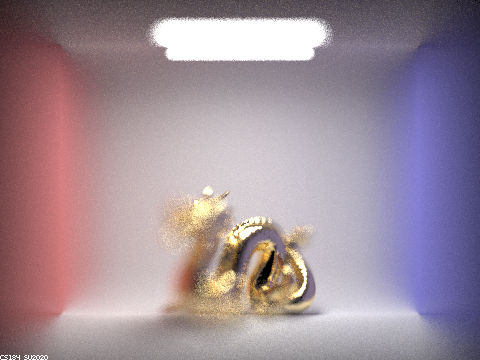

The website of this write up is: online write up
Overview
In this project, we choose two parts Part 1: Mirror and Glass Materials and Part 4: Depth of Field to render glass material and the blur caused by focal length. The details will be presented in each section.
Part 1: Mirror and Glass Materials
In this part, we will sequentially finish the reflection and reraction BSDF, and the sample function. Then we will track the multiple bounce throught one mirror sphere and one glass sphere.
Task 1 : Mirror reflection
The mirror reflection is directly a transmission of rays. We use the following steps.
- First in the reflect function, we use z axis as normal vector, so the wo = {-wi.x, -wi.y, wi.z}. The plane coordiante is reflected based on z.
- Then in the sample_f, we call the reflect function to get wo, and set the pdf=1. The return irradiance is the reflectance / |cos(theta)|.
The dragon is the results of mirror reflection.
Task 2 : Refraction
In this task, we need to fill in the refract function and the sample_f. Here we need to consider the total internal reflectin problem. The exact steps are in the following.
- Judge the entering and exiting lights using the sign of z. If entering then eta=1/ior, else eta=ior.
- Calculate the discriminant using eta and z. If it is negative, then only internal reflection. So nothing happens.
- If the discriminant is positive, there exists refract light and then formulate the wi using wo and eta. Then return transmittance / abs_cos_theta(*wi) / eta^2 in the high-level.
Here we render the pure refraction of the front sphere. We can see that it has no reflection, but only the refraction rays.
Task 3 : Glass Material
In this task, we will combine reflection and refraction using the coin_flip indicator.
- First, we check the total internal reflection, we will do similar thing like in the reflection task.
- Then we go into the partial reflection and refraction. We calculate the Schlick's reflection coefficient R and check the condition using function coin_flip.
- If coin_flip is ture (random number is smaller than r), we use the reflection and pdf = R. Otherwise, we use refraction and pdf = 1-R.
Here we show a sequence of CBspheres in which two spheres are glass with reflection and refraction. We iterate the max_ray_depth as 0,1,2,3,4,5,6 and 100.
|
|
|
|
|
|
|
|
|
|
When max depth from 0 to 5, we can find the light tracking is totally different. So in the following part, we will point out their unique phenomenon and analyze the reasons. we use rfl to represent reflection, and rfr to represent the refraction.
At depth 0, only direct light source. Since there is no bounce of light, we can only preceive the light from the light source, so that the other places are just black.
At depth 1, reflection shows up. We can see the deffuse reflection from the walls and the mirror reflection from the sphere. But there is no refraction because the light must go enter and exit the sphere so it takes at least two bounces.
At depth 2, refraction through sphere shows up + reflection from wall to sphere shows up. Here we can observe two new phenomenons.
- light -> wall/front sphere(rfl) -> behind sphere(rfl). This shows more on the behind(left) sphere, so we can see the red, blue patch from the wall, and black patch from the front sphere.
- light -> right sphere back(rfr) -> right sphere front(rfr). The light refracts through the right sphere twice so we can we some lights go through it. But only very little refraction lights go through it because of the a lot of lights are still inside the sphere so it is still very dark.
At depth 3, more reflection and refrection entering and exiting the sphere. It is very obvious that the two spheres are much brighter, becuase two new traces are added. And the ground of the right sphere has a light circle. We can explain it using the following reasons.
- light -> right sphere(rfr, enter) -> right sphere(rfr, exit) -> ground. The light refracts through the right sphere and illuminates the ground, so we can see a light circle.
- light -> wall or another sphere(rfl) -> sphere(rfr, enter) -> sphere(rfr, exit). Becuase more reflective light from the environment come to the sphere so we can see the right sphere much brighter, and the left side is the image of blue wall.
At depth 4, the image of the right sphere in the left sphere is not dark anymore + a small light circle on the blue wall. They are generated by 4 bounces rays.
- light -> blue wall -> right sphere(rfr, enter) -> right sphere(rfr, exit) -> left sphere(rfl). This trace makes the spot on left sphere blue.
- light -> right sphere(rfr, enter) -> right sphere(internal reflection) -> right sphere(rfr, exit) -> blue wall(rfl). After several bouncing on the outer and inner surface of right sphere, we can see a small light spot on the blue wall.
At depth 5 to 100, no more extra features The images are just simialr to the depth 4, and it is only a bit brighter than less bounces because the energy of bounces decrease exponentially.
Part 4: Depth of Field
In this part, we need to implement the thin-len camera model to visaulize the effect of the depth of field.
In the previous tasks, we used to assume we are using the pin-hole model. All lights must go through a small hole at the origin, so for one pixel, it can only receive the light directly from the small hole. We do not have to integrate many light beams since only one light can go through the pin hole at a specific direction. The value of each pixel is not blurred by many light sources.
In this new task, we will use the thin-len model instead. Except for the light directly goes through the origin, all the lights from the focal plane will always cast on the image plane. This causes a problem that if the central ray intersects an object that is not at the focal plane, the pixel will still receive many rays come from the focal plane at other places. So this pixel is blurred. The only place with clear pixels is where its central ray intersect with object exactly on the focal plane.

Instead of only using the red line in the above figure, we will ramdonly sample rays from the dist of len radius. For example, some rays like the yellow will refract on the thin len at some position, and the refracted ray will point to the point where the central ray hits the focal plane. So at the begining, we need to find the hitting point of the red line and the focal plane. Then randomly sample rays in the scope of len dist and find the blue ray and trace through it. As brief summary is as follows.
- Find the sampling position at the image plane as Proj 3-1, then calculate the central ray direction (red line) using the sample positin and the origin.
- To uniformly sample from a disk, we use two variables rndR in [0,1), rndTheta[0,2pi) that covering the unit circle. Then we map it to the len dist with radius LensRadius by rndR and the phase angle by rndTheta. This is the hitting point on the len position(z=0), so we can use it to calculate start of blue line.
- Next, we need to find the hitting point of red line and the focal plane. We connect the sample position and the origin, then trace forward until reach the focal plane. The hitting point is the end of blue line.
- Finally, we derive the direction of blue line and normalize it. Converting the directin and the origin to the world coordinate, and clip the intersection time min_t and max_t.
|
|
|
|

|
|
In the first experiment, we change the focal distance from a small value 4.4 to a larger value 5.9. During the shifting, the focal region on the dragon is changing. When focal distance = 4.4, we focus on the plane in front of the dragon. As we increase the focal distance, the focal plane moves to the dragon head, then dragon tail and the plane behind it. Here we use the aperture radius=1.23.
In the next task, we fix the focal distance=4.56 and change the aperture(disk) radius as 2, 1, 0.5 and 0.1. Here we can see a clear phenomenon of the depth of field.
The depth of field is generated because our human can somehow tolorant some small blur even if the object is not perfectly placed on the focal plane. If the aperture is small, only little light except for the central ray can go through the len. So if the len radius is extremely small, the result is identical to the pin-hold model, and the depth of field is infinitely long.
But as we increase the aperture radius, a large amount of lights from other direction hit to the sampling pixel as well, so it is more blury. And consequently, the depth of field is very short.
|
|
|
|
|
|
Through the four images, when r=2, the image is totally blured; when r=1, the chest region is sharper. Then r=0.5 the head region is more obvious, and finally when we reduce r=0.1, the whole dragon is sharp. During this procedure, the depth of field is increasing and gradually cover the depth of the dragon.
In the autonomous camera system such as cellphone, we usually find that even if two objects are very far, we do not find the blury. I think they use two ways to metigate this problem. First, use smaller aperture; second, process the image electronically such as image processing techiques. The depth of field might be a useful tool for photographer and artist, but for us students, we prefer the photo with less blur.